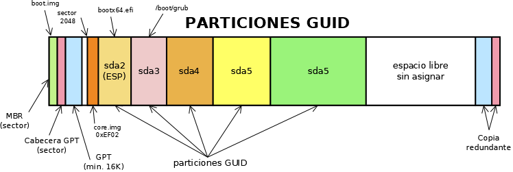

5.1.2.2.2. GRUB.¶
GRUB. es el gestor de arranque más utilizado en la instalación de sistemas Linux, como lo fue antiguamente LILO. Hay de él una versión ya obsoleta conocida como GRUB. Legacy y la actual versión conocida como GRUB.2. Tiene muchas características que lo hacen conveniente:
Tiene un excelente soporte tanto para BIOS como UEFI.
Puede funcionar como cargador de arranque para cualquier sistema operativo cuyo núcleo implemente la Especificación Multiarranque, como es el caso de Linux.
Tiene soporte para los sistemas de archivos más utilizados.
Tiene soporte volúmenes lógicos de Linux y los sistemas RAID también de Linix.
5.1.2.2.2.1. Caracterización¶
Antes de entrar a exponer su configuración es conveniente saber cómo funciona y dónde se instala.
5.1.2.2.2.1.1. Fases¶
GRUB. se carga en tres fases:
La primera (stage 1) se corresponde con el archivo
boot.img, que es el código que se instala en el MBR y, por tanto, sólo puede tener 446 bytes. El proósito de este pequeño código es ser capaz de cargar la siguiente fase.La segunda (stage 1.5) se corresponde con el archivo
core.imgcuyo tamaño es de prácticamente 32KiB. Este archivo, como el anterior, no es un archivo almacenado en un sistema de archivos: ya veremos dónde se guarda.La última fase (stage 2) son ya los módulos que se encuentran dentro de
/boot/gruby, por tanto, se compone de archivos almacenados en el sistema de archivos al que pertenezca ese directorio.
La razón de la descomposición en boot.img y core.img es la
limitación en tamaño del MBR. Como cuando el arranque es EFI, no existe tal
limitación, porque este firmware no usa el MBR, sino que lee los contenidos
de la partición ESP, el papel de ambos lo asume el archivo grubx64.efi
y este ya se encargará de consultar el directorio /boot/grub allí donde
se encuentre.
Nota
Si en un mismo disco, instalamos Windows y Linux o varios
Linuces es conveniente reservar para /boot/grub una pequeña
partición aparte (basta con una de 32MiB). Esto independiza los
ficheros de GRUB. del resto de Linux y posibilitará que podamos eliminar
Linux sin perder el arranque mediante GRUB.. Es un problema recurrente
que un usuario habituado a Windows instale Linux y se arrepienta luego y
pretenda recuperar el espacio de disco que usó para Linux. Si no creó una
partición separada para GRUB. y, descuidadamente, decide formatear Linux
se encontrará con que ha perdido los ficheros necesarios para la fase 2 de GRUB. y el sistema dejará de arrancarle.
5.1.2.2.2.1.2. Particiones DOS¶
Cuando el sistema de particiones es DOS (y el arranque forzosamente BIOS),
core.img se almacena en el espacio que queda entre el MBR y el
comienzo de la primera partición (muy probablemente el sector 2048).
Nota
Obsérvese que si, obviando cualquier alineación, colocamos la
primera partición en el sector 63, como ocurría en los discos antiguos, el
espacio preparticiones es de 62 sectores, que es insuficiente para
almacenar el core.img de GRUB.2 (~32 KiB).
Tomando todas las premisas establecidas hasta ahora, un posible particionado que permita el multiarranque es el siguiente:
5.1.2.2.2.1.3. Particiones GPT con arranque UEFI¶
En este caso, el fichero grubx64.efi, que es el equivalente a core.img (boot.img es prescindible puesto que no se escribe en el MBR), se almacena en la partición ESP. El resto del gestor seguirá almacenándose en la partición que albergue /boot/grub. Un particinado que permite el arranque es el siguiente:
5.1.2.2.2.1.4. Particiones GPT con arranque BIOS¶
Para que este particionado funcione con BIOS es necesario que el MBR
contenga el código de arranque, lo cual es posible gracias a que EFI preserva
el primer sector del disco como MBR de protección y la parte que debe contener
el cargador de arranque no se usa. En consecuencia, el boot.img de
GRUB. puede instalarse en en ese MBR. Ahora bien, no es tan sencillo guardar
core.img en el espacio anterior a la primera partición, porque la GPT
no tiene un tamaño fijo (aunque lo normal es que sea de 16KiB). Por eso,
en este particionado, GRUB. exige una partición GUID dedicada a almacenar
core.img que recibe el nombre de «BIOS Boot Partition». Su identificador
corto es 0xEF021.
Nota
Forzar la alineación en las particiones se hace para mejorar el rendimiento en las operaciones de lectura y escritura. Como esta partición sólo se lee al arrancar el ordenador y rara vez se escribe, es una buena argucia forzar a la herramienta de particionado para que se salte la alineación predefinida (1MiB) y use una alineación de 4 KiB (necesaria en discos SSD ya que los sectores son de este tamaño). De este modo, podemos situar la partición entre el sector 20 y el comienzo de la primera (segunda) partición sí alineada (sector 2048). Esta será la estrategia que sigamos en esta guía.
En consecuencia, podemos definir una GPT así:

donde sda1 es la partición «BIOS Boot Partition».
5.1.2.2.2.1.5. Arranque híbrido¶
Si somos previsores, es probable que queramos dejar preparado el sistema para la conversión al arranque UEFI sea lo menos traumática posible. En ese caso, un particionado apropiado es, simplemente, aquel que dispone las dos particiones de arranque: la «Bios Boot Partition» (0xEF02) y la ESP (0xEF00).
No es muy útil instalar las dos versiones de GRUB. (aunque ambas puedan coexistir como se muestra en el gráfico), a menos que el disco sea extraíble. Sin embargo, si tenemos un ordenador con el antiguo arranque BIOS, podemos instalar GRUB. de un modo y, al cambiar de ordenador y de arranque, reinstalar GRUB. en el otro modo.
5.1.2.2.2.2. Configuración¶
Por hacer
Configuración a través de /etc/default/grub e instalación
manual.
Notas al pie